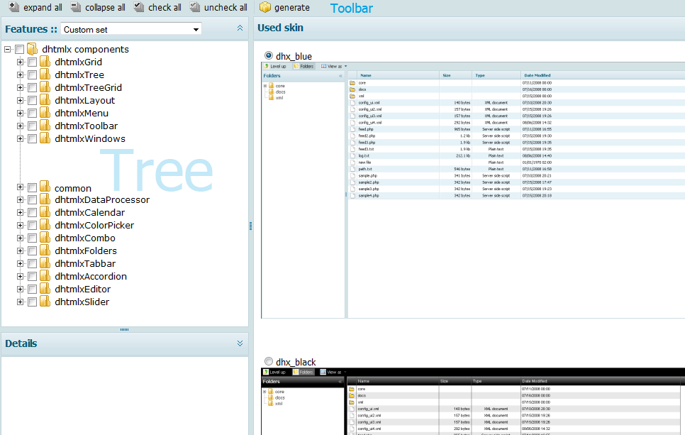

libComplier
libComplier is a utility that is created for those users who intend to use dhtmlx components. This tool is designed to make the work of developers much easier. There's no need to set paths to different JS and CSS files required for every single dhtmlx component. libComplier generates one JS and one CSS files out of them all that the user can download and use. So, instead of a pack of different files, we get only two that contain all necessary code (including styles definition). What's more, the tool also provides users with all the necessary image files for the chosen component/components, stored in one archive.
This utility provides users with the possibility to:
- Choose the necessary component/components and desired set of functionality;
- Choose the necessary skin;
- Generate a JS and a CSS files containing compilation of all the JS and CSS files needed for the chosen component/components;
- Generate an archive containing a compiled JS file and all necessary images.
Note: two last actions mentioned are done at the same time by one button click.
libComplier's Interface
libComplier's interface is quite simple, intuitive, and user-friendly. The program is displayed with the help of “3J” Layout view with a Toolbar attached to it. Each item in this Layout can be collapsed or expanded; the dimensions of each them can be easily changed by dragging one of its sides with a mouse.

Tree
The Tree is displayed in the left upper item of Compiler's layout. The main parent tree node is called “dhtmlxComponents”. Its child branch items represent dhtmlx components. Leaf items stand for the main functionality of a certain component.
When the user checks any leaf item, all its parent items become checked as well. On startup none of tree items is checked, and only the main parent node is expanded. There is the possibility to expand or collapse all tree nodes using toolbar buttons. Also the user can check or uncheck all tree nodes by one button click.
Features
There is also a drop-down list called “Features” in the functional panel of the left upper item of Compiler's layout. This drop-down list contains ready-made presets for the most commonly used dhtmlx components or their combinations.
The available ready-made presets are as follows:
- Custom Set - it's not a preset, it's the possibility for the user to return the tree to its initial state - when nothing is checked;
- Grid Basic - this preset includes basic grid functionality: data loading, sorting, resizing, editing (ed,ro,txt), data serialization, API for selection and rows adding;
- Grid Full - this preset contains all grid functionality - grouping, filtering, math, d-n-d, additional excell types;
- Tree Basic - here the user will find basic tree functionality: data loading from XML, ability to add|delete rows, d-n-d, checkboxes;
- Tree Full - all tree functionality is included into this preset (sorting, loading from json, serialization, operation with cookies);
- TreeGrid Basic - this preset contains basic treegrid functionality, which is loading and API, plus basic grid functionality;
- TreeGrid Full - in this preset the user will find basic treegrid functionality + filtering in treegrid + ability to show tree lines, as well as full grid functionality;
- Suite Basic - this preset includes grid, tree, treegrid, combo, and tabbar components with their basic functionality;
- Suite Full - all functionality of all components is added to this preset;
- Explorer Base - this preset is a base set to use the layout and the main components (tree and grid).
When the user chooses one of the preset from the list, the utility checks the necessary tree nodes, which files will be compiled, and shows the details of the chosen preset. On startup Custom Set preset is chosen from the drop-down list.
Details
The Details part is situated right under the tree, in the left lower part of Complier's layout. It shows brief description for leaf items and for some of the branch items. The details are used to give the user general information on the chosen item.
Used Skin
This part of Compiler's layout allows the user to choose the skin he wants to apply to his project. The only thing the user should do is to choose one of the available skins displayed by clicking the radio button near the skin name. Each available skin is backed up by a picture that can be viewed full size by clicking it. The picture then will be opened in a new window.
On startup dhx_blue skin is chosen.
Toolbar
The toolbar contains the following buttons:
- Expand all - a click on this button expands all nodes in the Tree;
- Collapse all - a click on this button collapses all Tree nodes;
- Check all - a click on this button checks all Tree nodes (branch and leaf ones);
- Uncheck all - a click on this button uncheks all Tree nodes (branch and leaf ones);
- Generate - a click on this button generates a compiled JS and a CSS files in an archive, a link to which is displayed in a popup “Generated code” window.
Note: “Generated code” window will be displayed only if the user has already chosen a skin and a component/components in the Tree.
Generated Code Window
This popup window appears when the user clicks “Generate” toolbar button. The window contains the progress text while the system generates the necessary data. When the data is generated, the window displays the following:
- Text: “Ready code stored at [path to the directory the code is stored];
- Archive link: “Get all as zip” - a link to the generated archive containing a JS file, a CSS file, and all necessary images. The user can download the archive by clicking the link.
The user should close the window after the download is finished.
How libComplier Works
All files (JS and CSS ones) are compressed and compiled into one JS and one CSS files, which is put into an archive together with all the necessary image files.
The only parameter in get_files.php file, that the user can indicate, is the following:
define("YUI",true);
Here true means that YUI compressor will be used for files compression. While false stands for more simple files compression.